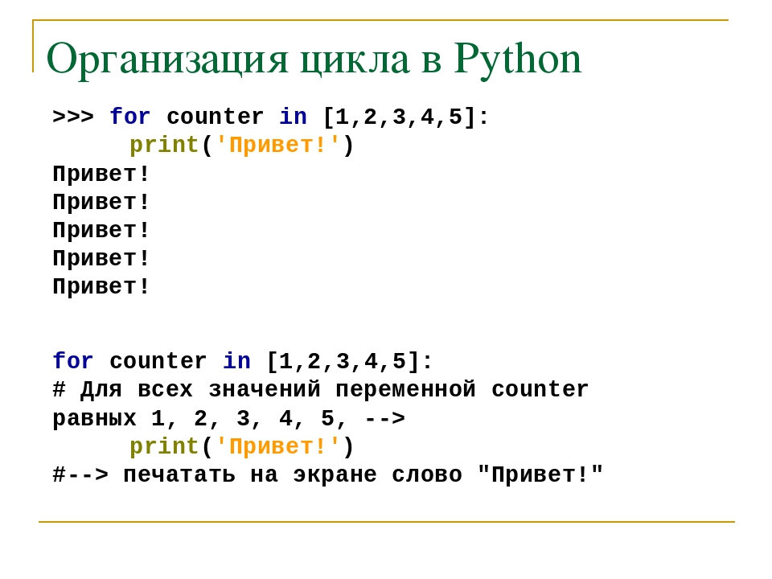
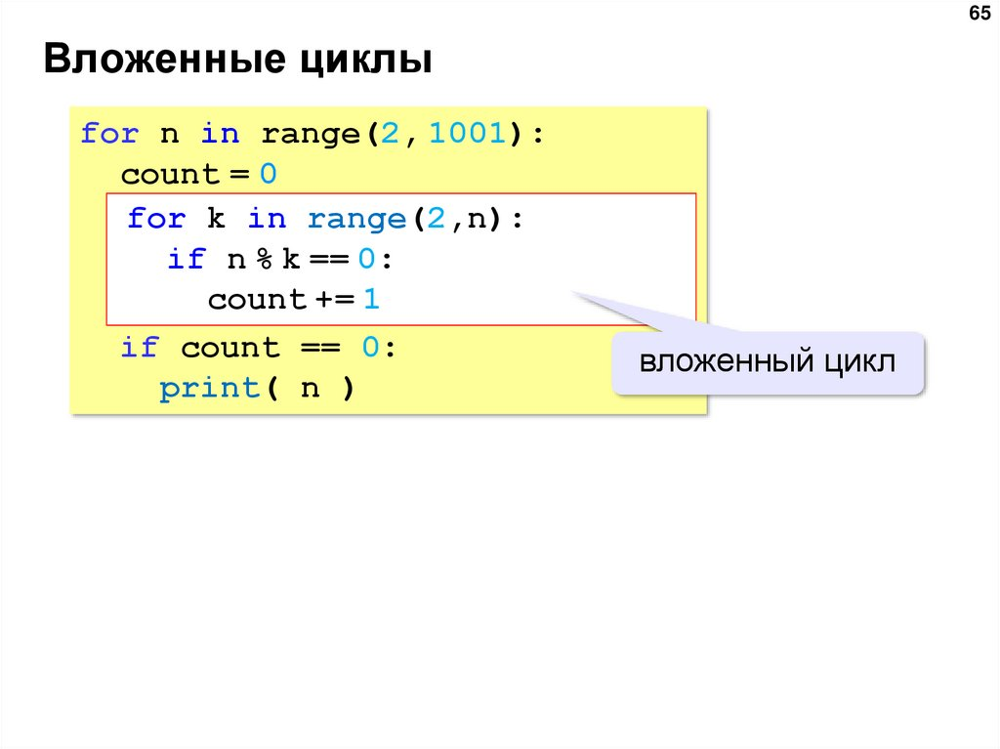

Циклы упрощают сложные задачи до простых. Он позволяет нам изменить поток программы таким образом, что вместо того, чтобы писать один и тот же код снова и снова, мы можем повторять его конечное число раз. Например, если нам нужно вывести первые 10 натуральных чисел, то вместо того, чтобы использовать оператор print 10 раз, мы можем вывести их внутри цикла, который выполняется до 10 итераций.
 
Дополнительная информация по ссылке Циклы